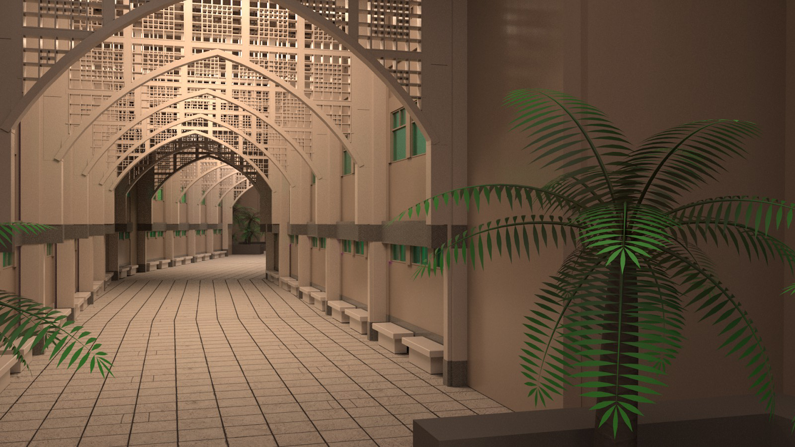

Transcend
3D Computer Modeling & Animation
I completed this independent project under the approval and supervision of Rachel Clark - Professor of New Media Art at California State Univerity Sacramento over the span of 3 months. My goal with this 3D computer graphics art piece was to create an Islamic architectural visualization inspired by Umm Al-Qura University in Mecca, Saudi Arabia. My intention was to showcase repeating structures, infinite geometry, and intricate interlaced patterns, all while utilizing scale and proportions to transport the viewer into the realistic scene.
Work Flow:
Model the scene → apply UV textures → utilize arnold lighting → create cameras and motion paths from various angles → shoot camera playblast videos at a rate of 24 frames / 1 second → Render each frame ( 1 video = 10 seconds = 240 frames. 1 frame = 1 hour of render time. 1 video = 24 hours of rendering ) → Denoise each video → upload and edit videos using Adobe After Effects → Use Adobe Media Encoder to convert video to be used with Adobe Premiere Pro → Utilize Adobe Premiere Pro for video and sound choreography → Result = Video.mp4 file
What I did
- Polygon Modeling
- Utilize Complex Lighting Systems
- MASH Networks
- Arnold Rendering
- File Size Management
- Render Multiple Cameras
- Video and Music Editing
- Utilize a Render Farm consisting of 30 computers. A render farm is a high-performance computer system, e.g. a computer cluster, built to render computer-generated imagery (CGI), typically for film and television visual effects
Softwares Used:
- Autodesk Maya
- Adobe After Effects
- Adobe Media Encoder
- Adobe Premier Pro
Still Frame Renders
